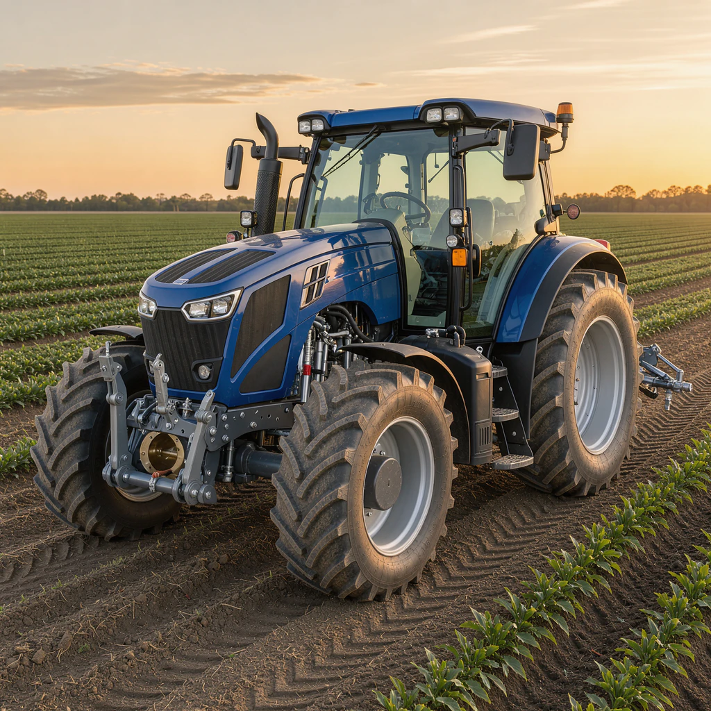

Сельскохозяйственная техника
Тракторы и мини-тракторы, зерноуборочные и кормоуборочные комбайны, сеялки и посевные комплексы, плуги, культиваторы, бороны, опрыскиватели, косилки, пресс-подборщики, жатки, прицепы и другое навесное оборудование.